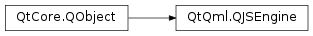

QJSEngine¶
Inherited by: QQmlEngine, QQmlApplicationEngine
Synopsis¶
Functions¶
- def
collectGarbage() - def
evaluate(program[, fileName=”“[, lineNumber=1]]) - def
globalObject() - def
installExtensions(extensions[, object=QJSValue()]) - def
installTranslatorFunctions([object=QJSValue()]) - def
newArray([length=0]) - def
newObject() - def
newQMetaObject(metaObject) - def
newQObject(object) - def
toScriptValue(arg__1)
Detailed Description¶
-
class
PySide2.QtQml.QJSEngine¶ -
class
PySide2.QtQml.QJSEngine(parent) Parameters: parent – PySide2.QtCore.QObject
-
PySide2.QtQml.QJSEngine.Extension¶
Note
This enum was introduced in Qt 5.6.
-
PySide2.QtQml.QJSEngine.collectGarbage()¶
-
PySide2.QtQml.QJSEngine.evaluate(program[, fileName=""[, lineNumber=1]])¶ Parameters: - program – unicode
- fileName – unicode
- lineNumber –
PySide2.QtCore.int
Return type:
-
PySide2.QtQml.QJSEngine.globalObject()¶ Return type: PySide2.QtQml.QJSValue
-
PySide2.QtQml.QJSEngine.installExtensions(extensions[, object=QJSValue()])¶ Parameters: - extensions –
PySide2.QtQml.QJSEngine.Extensions - object –
PySide2.QtQml.QJSValue
- extensions –
-
PySide2.QtQml.QJSEngine.installTranslatorFunctions([object=QJSValue()])¶ Parameters: object – PySide2.QtQml.QJSValue
-
PySide2.QtQml.QJSEngine.newArray([length=0])¶ Parameters: length – PySide2.QtCore.uintReturn type: PySide2.QtQml.QJSValue
-
PySide2.QtQml.QJSEngine.newObject()¶ Return type: PySide2.QtQml.QJSValue
-
PySide2.QtQml.QJSEngine.newQMetaObject(metaObject)¶ Parameters: metaObject – PySide2.QtCore.QMetaObjectReturn type: PySide2.QtQml.QJSValue
-
PySide2.QtQml.QJSEngine.newQObject(object)¶ Parameters: object – PySide2.QtCore.QObjectReturn type: PySide2.QtQml.QJSValue
-
PySide2.QtQml.QJSEngine.toScriptValue(arg__1)¶ Parameters: arg__1 – object Return type: PySide2.QtQml.QJSValue
© 2018 The Qt Company Ltd. Documentation contributions included herein are the copyrights of their respective owners. The documentation provided herein is licensed under the terms of the GNU Free Documentation License version 1.3 as published by the Free Software Foundation. Qt and respective logos are trademarks of The Qt Company Ltd. in Finland and/or other countries worldwide. All other trademarks are property of their respective owners.